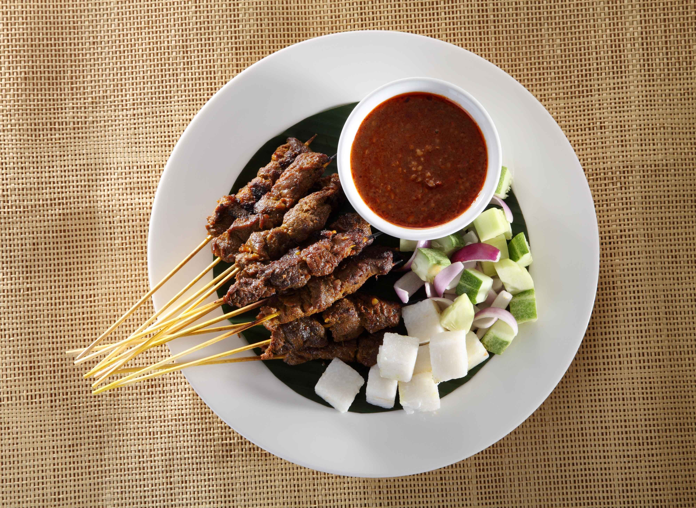

Satay in Muar is known for its tender, well marinated meat grilled over charcoal, giving it a rich smoky aroma. The peanut sauce is thicker and slightly sweeter, making it a perfect match for the skewered meat. In Muar, satay is also commonly enjoyed in the morning as breakfast, served with soft nasi impit that absorbs the flavorful peanut gravy. This makes satay not only a dinner or supper food, but a unique morning favourite among locals.
Satay Recipe
Bahan-bahan:
Bahan Utama:
400 gm isi ayam (dipotong kecil).
200 gm daging (dipotong nipis).
Bahan untuk Kisar:
1 biji bawang besar.
3 ulas bawang putih.
1 inci lengkuas.
1 1/2 inci kunyit hidup.
2 batang serai.
2 inci halia.
1/2 sudu besar jintan putih.
1/2 sudu besar jintan manis.
1 sudu teh garam.
6 sudu besar gula.
1 sudu teh serbuk kunyit.
Secubit serbuk perasa.
Bahan Kuah Kacang:
2 bungkus Pes Kuah Kacang Segera (sebarang jenama).
1 cawan air.
Bahan Nasi Impit dan Sampingan:
8 bungkus Nasi Impit Segera.
2 liter air.
1/2 batang timun (dipotong dadu).
1 biji bawang besar (dipotong dadu).
Cara Penyediaan:
- Kisar halus semua bahan kisar.
Tuangkan ke dalam mangkuk & masukkan ayam dan daging.
Perap seharian (kalau nak lagi sedap, perap semalaman. Simpan dalam peti ais) - Daging dan ayam dikeluarkan dari peti sejuk dan dicucuk pada lidi.
Ulangi langkah ini sehingga kesemua bahan habis.
Kemudian, masukkan pucuk yang telah digoreng ke dalam air dan ramas hingga hancur. - Bakar sehingga masak sempurna
- Masukkan pes kuah kacang dan air ke dalam periuk. Masak sehingga mendidih.
- Rebus nasi impit sehingga masak sempurna.
Toskan air dan sejukkan. Potong empat apabila ingin dihidangkan. - Satay ayam dan daging boleh dihidangkan bersama-sama kuah kacang dan nasi impit.
Turut boleh dihidangkan beserta timun dan bawang.